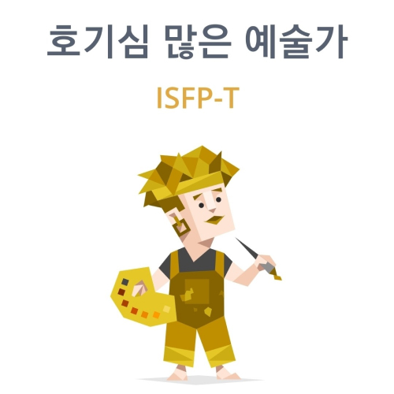

내 컴퓨터
서대원
Frontend Developer eodnjs1019@naver.com저는 코딩에 대한 열정이 가득한 24살 서대원입니다. 새로운 지식을 배우고, 그것을 활용해 창의적인 결과물을 만들어내는 과정에서 큰 즐거움을 느낍니다. 특히, 디지털 세계의 기본 언어라고 할 수 있는 프로그래밍에 매료되어, 이 분야에 대한 심도 있는 학습을 결심하게 되었습니다.
안산대학교 IT융합비즈니스과라는 코딩학과를 전공하였으나, 군휴학이후 복학하였더니 과 인원 수 미달로 타 과와 통합을 하게 되어 스마트콘텐츠과 영상전공학과로 전과되어 영상콘텐츠에 관해 배워 졸업을 하게되었습니다. 하지만 영상에 대해 적성을 못 느껴 무엇을 할지 고민하게 되던 찰나 전망이 좋은 직업을 찾게 되었고 마침 원래 전공을 하였던 코딩이 생각나 국민취업제도를 이용하여 코딩을 공부하기로 결심하게 되었습니다. 처음 시작하였을 때는 적성에 맞는지에 대해 자신이 없었지만 저의 장점인 한 번 시작한 일은 포기하지 않는 성격으로 끝까지 열심히 할 생각입니다.
skill
- html
- 웹 페이지의 구조와 콘텐츠를 효과적으로 구현할 수 있는 능력을 보유하고 있습니다. 다양한 HTML5 태그와 속성을 활용하여 의미론적이고 접근성이 높은 웹사이트를 개발하는 데 익숙합니다
- css
- : 웹 페이지의 시각적 디자인과 레이아웃을 세련되게 조정할 수 있습니다. Flex와 Grid 시스템을 이용한 반응형 웹 디자인을 구현한 경험이 있으며, CSS 애니메이션과 전환을 활용하여 사용자 경험을 향상시키는 데 능숙합니다.
- javascript
- 동적 웹 페이지 및 어플리케이션 개발에 있어 깊은 이해도를 보유하고 있습니다. 비동기 프로그래밍, ES6+ 문법, DOM 조작 등을 포함한 고급 개념에 능숙합니다. 대규모 프로젝트에서의 성능 최적화와 디버깅에 경험이 풍부합니다.
- react.js
- 컴포넌트 기반 아키텍처를 이해하고 있으며, 대규모 어플리케이션 개발에 React를 활용한 경험이 풍부합니다. React Hooks, 상태 관리 라이브러리(예: Redux) 및 최적화 기술에 능숙합니다.
- node.js
- 선언적 렌더링과 컴포넌트 시스템을 이용한 인터랙티브한 UI 개발에 경험이 있습니다. Vuex를 활용한 상태 관리와 Vue Router를 사용한 라우팅에 익숙합니다.
- next.js
- 서버 사이드 렌더링(SSR)과 정적 사이트 생성(SSG)에 대한 이해를 바 탕으로 Next.js 프레임워크를 활용한 웹 어플리케이션 개발에 경험이 있습니다. SEO 최적화 및 퍼포먼스 향상을 위한 기술적 전략 구현에 능숙합니다
intro
- 